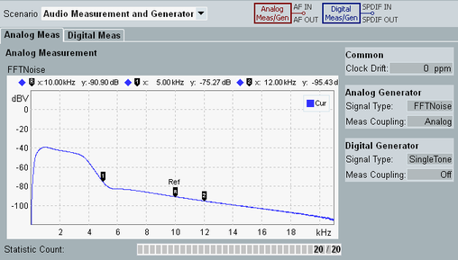

Main View
The main view is divided into two parts. At the top, you select a scenario. Below the scenario selection, one or more tabs are displayed depending on the active scenario. These tabs provide measurement results and display basic settings.

Main view with scenario Audio Measurement and Generator
The scenario selection and the individual tabs are described in the following sections.